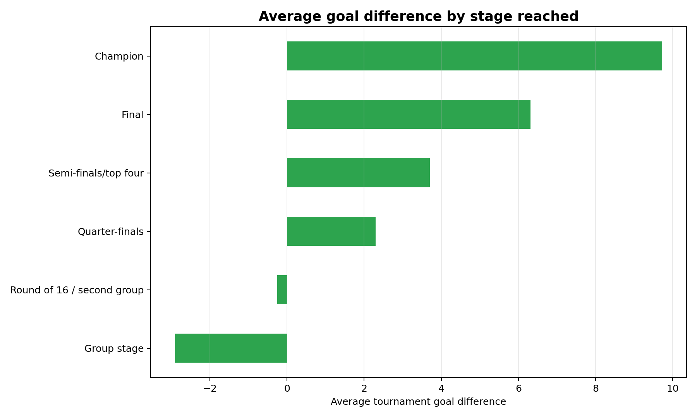
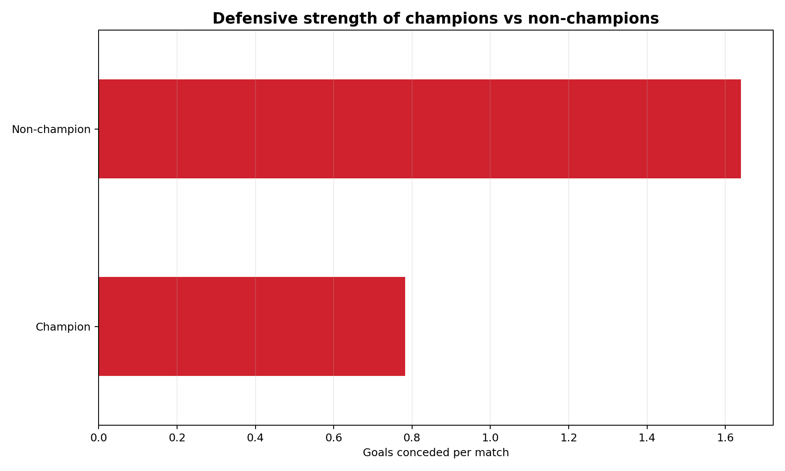
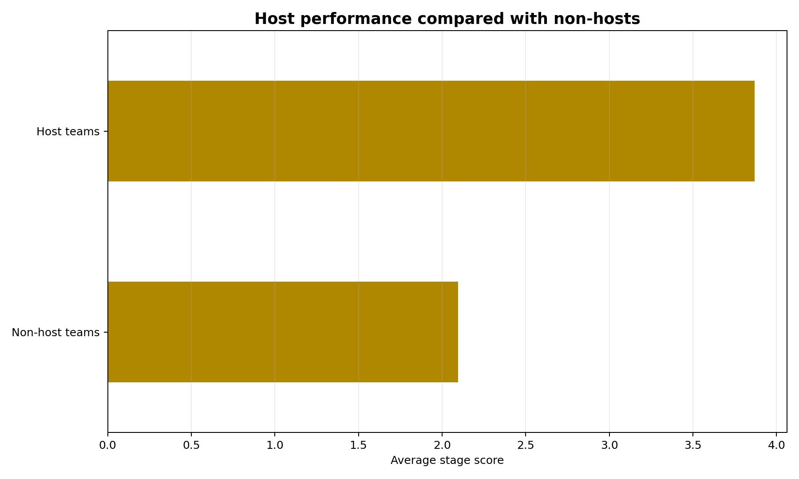
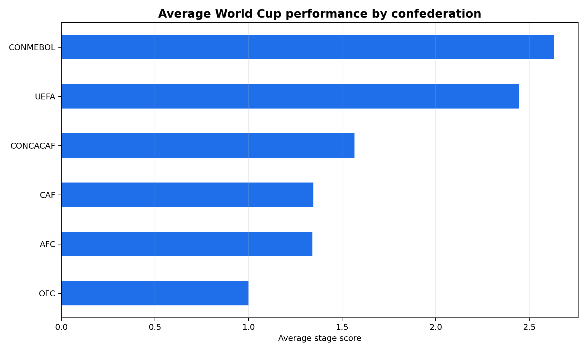
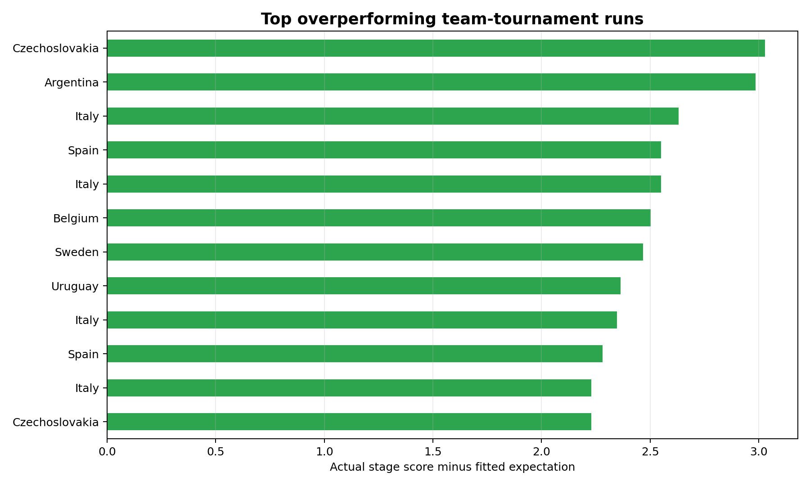
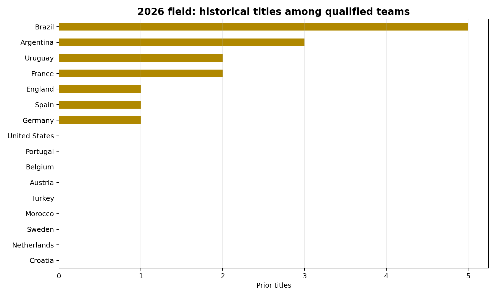

Predicting World Cup Success
A serious analysis of which measurable factors are most associated with deep FIFA World Cup runs: goal difference, defensive strength, attacking output, host advantage, tournament experience, confederation, knockout efficiency, and recent form.
What the Data Suggests
The analysis does not claim to predict a winner. It uses historical World Cup records and pre-tournament international results to identify patterns that are associated with deeper runs.
Core Visual Evidence




Baseline Model
A leakage-safe logistic regression baseline estimates whether a team reaches the semifinals. It trains on 1966-2006 and tests on 2010-2022 using only pre-tournament or historically valid features.

2026 World Cup Preview
The expanded 48-team 2026 field is included as a preview only. No 2026 match results are used. The project verifies the teams and groups, then compares historical experience and recent form.

Tools and Scope
The GitHub repo includes the raw/processed data pipeline, commented SQL, tests, generated charts, a Streamlit dashboard, and a portfolio case-study summary.